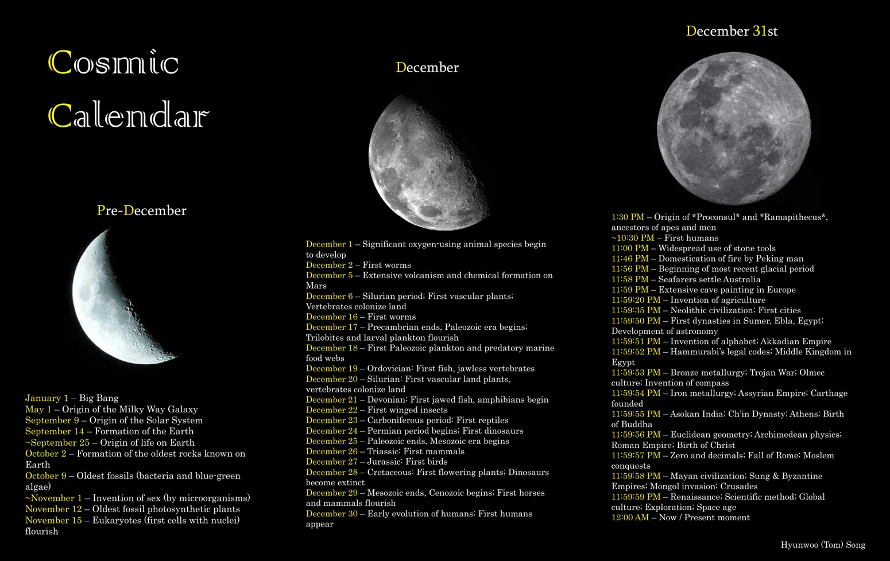
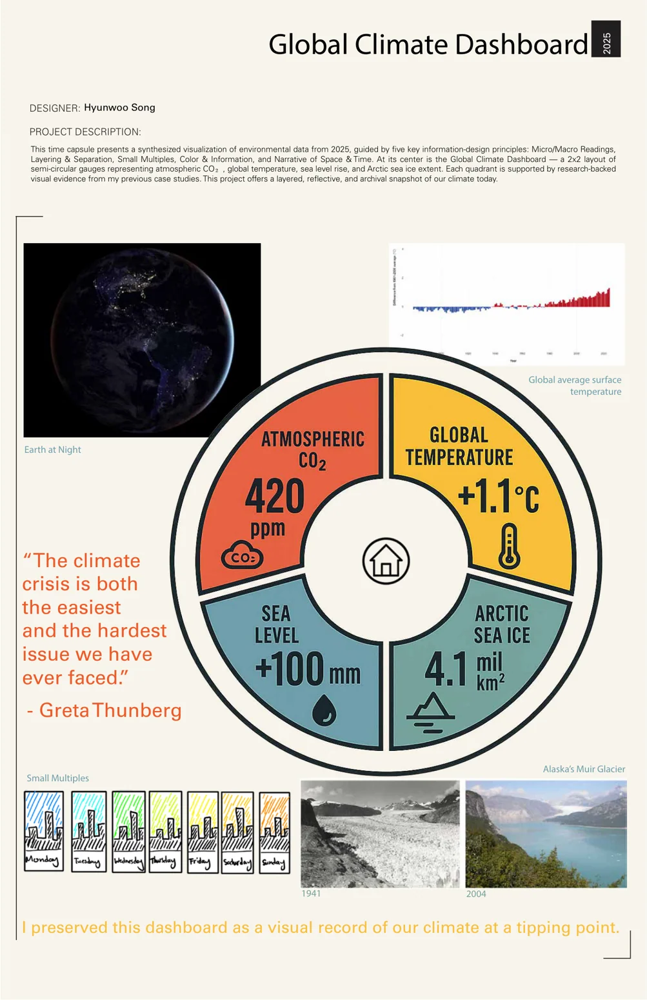

Pattern — Editorial Publication
Typography, publication structure, and editorial layout.
Open project ↗Original coursework projects with working local links.
Typography, publication structure, and editorial layout.
Open project ↗
Information design visualizing a cosmic-scale timeline.
Open project ↗
Visual design for climate indicators and comparative data.
Open project ↗
Sustainability concept, poster, and original renders.
Open project ↗